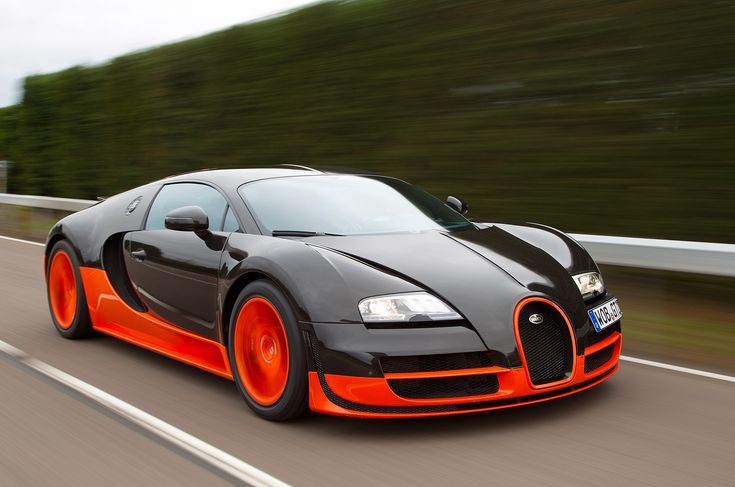
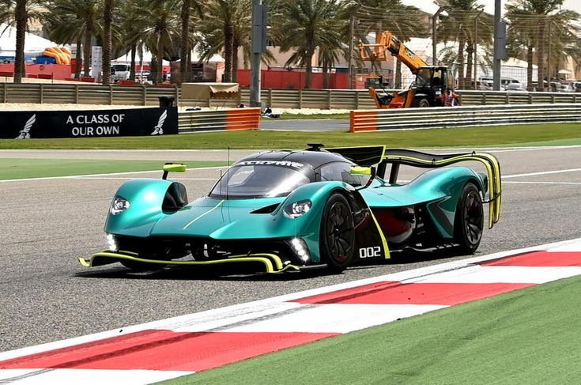
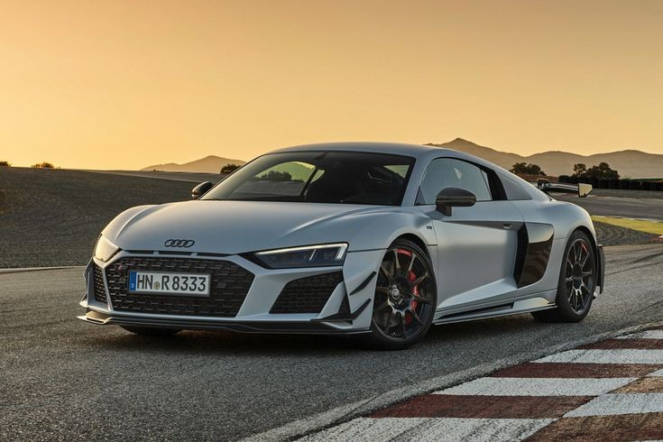
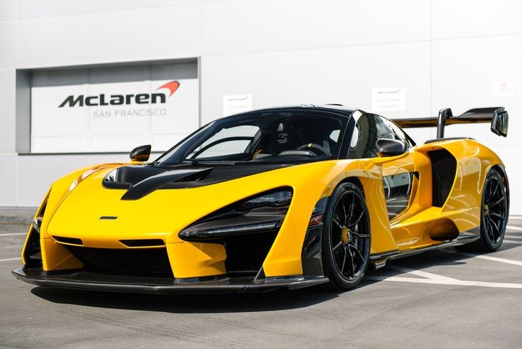
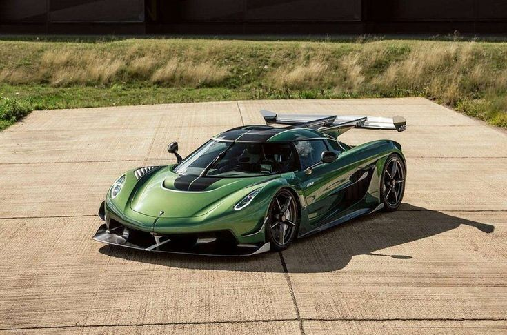

Esta pagina esta dedicada a mostrar un listado de los SuperAutos mas exclusivos del mundo, de marcas como:
Aqui se muestran caracteristicas como: Diseño, Rendimiento, Tecnologia, Innovaciones y Exclusividad del modelo de cada marca.
El Ferrari FXX K es un superdeportivo híbrido de edición limitada, diseñado exclusivamente para uso en pista y no homologado para la carretera.
El FXX K presenta un diseño aerodinámico extremo, con líneas agresivas y una carrocería de fibra de carbono. Su aerodinámica avanzada incluye un alerón trasero fijo de doble perfil y un spoiler trasero activo, que trabajan en conjunto para maximizar la carga aerodinámica y la estabilidad a altas velocidades.
Este modelo está equipado con un motor V12 de 6.3 litros que produce 860 CV, complementado por un motor eléctrico que añade 190 CV adicionales, alcanzando un total de 1,050 CV. El sistema HY-KERS (sistema de recuperación de energía cinética) permite diferentes modos de conducción, optimizando el rendimiento según las necesidades del piloto.
El interior del FXX K está diseñado para ofrecer una experiencia de conducción pura y sin concesiones. Incluye asientos de competición y un volante multifuncional que permite al piloto controlar diversas funciones del vehículo. La telemetría avanzada y los sistemas de monitoreo proporcionan datos en tiempo real sobre el rendimiento del coche.
El FXX K incorpora numerosas innovaciones tecnológicas, como la suspensión magnetoreológica y los neumáticos Pirelli con sensores integrados que monitorean la aceleración, la temperatura y la presión. Estos avances garantizan un rendimiento óptimo en la pista.
Solo se fabricaron unas pocas unidades del FXX K, lo que lo convierte en un vehículo extremadamente exclusivo y deseado por los entusiastas de Ferrari y los coleccionistas de automóviles de alto rendimiento. Este modelo representa la cúspide de la ingeniería y el diseño de Ferrari, ofreciendo una experiencia de conducción inigualable en la pista.

El Lamborghini centenario es un superdeportivo de edición limitada creado para conmemorar el centenario del nacimiento de Ferruccio Lamborghini, el fundador de la marca.
El Centenario presenta un diseño aerodinámico y agresivo, con líneas afiladas y una carrocería de fibra de carbono. Su aspecto es futurista y distintivo, destacando por su gran difusor trasero, alerón ajustable y puertas de tijera.
Equipado con un motor V12 de 6.5 litros, el Centenario produce 770 CV, lo que lo convierte en uno de los Lamborghinis más potentes jamás fabricados. Puede acelerar de 0 a 100 km/h en solo 2.8 segundos y alcanzar una velocidad máxima de más de 350 km/h.
El interior del Centenario es lujoso y deportivo, con asientos de fibra de carbono y tapicería de Alcantara. Incluye un sistema de infoentretenimiento avanzado con una pantalla táctil de 10.1 pulgadas, conectividad Apple CarPlay y un sistema de telemetría para registrar datos de conducción.
Solo se fabricaron 40 unidades del Centenario, divididas en 20 coupés y 20 roadsters, lo que lo hace extremadamente exclusivo y deseado por coleccionistas de todo el mundo.
El Centenario incorpora varias innovaciones técnicas, como la dirección en las cuatro ruedas, que mejora la maniobrabilidad y estabilidad a altas velocidades, y un sistema de suspensión adaptativa que ajusta la rigidez según las condiciones de la carretera.
Este modelo no solo celebra la historia de Lamborghini, sino que también muestra el futuro de la marca con su combinación de potencia, tecnología y diseño vanguardista.

El Bugatti Veyron 16.4 Super Sport es un hiperdeportivo de alto rendimiento que se destacó por ser uno de los autos más rápidos y potentes del mundo.
El Veyron Super Sport presenta un diseño aerodinámico optimizado, con una carrocería de fibra de carbono que reduce el peso y mejora la estabilidad a altas velocidades. Su forma plana y alargada es inmediatamente reconocible, y en lugar de tomas de aire en el capó, el motor de 16 cilindros se ventila a través de dos conductos NACA en el techo.
Este modelo está equipado con un motor W16 de 8.0 litros con cuatro turbos, que produce 1,200 CV (882 kW) y 1,500 Nm de par motor. Puede acelerar de 0 a 100 km/h en solo 2.5 segundos y alcanzar una velocidad máxima de 431 km/h, aunque está limitada electrónicamente a 415 km/h para proteger los neumáticos.
El interior del Veyron Super Sport combina lujo y tecnología avanzada. Incluye asientos de cuero de alta calidad, un sistema de infoentretenimiento de última generación y una instrumentación que proporciona información detallada sobre el rendimiento del vehículo.
El Super Sport incorpora varias innovaciones técnicas, como turbos de mayor diámetro y enfriadores intercooler sobredimensionados. La suspensión ha sido mejorada con estabilizadores más rígidos y amortiguadores con tecnología derivada de la competición.
Solo se fabricaron 48 unidades del Veyron Super Sport, lo que lo convierte en un vehículo extremadamente exclusivo y deseado por los coleccionistas de automóviles de alto rendimiento.
Este modelo representa la cúspide de la ingeniería automotriz, combinando velocidad, potencia y lujo en un paquete impresionante.
El Aston Martin Valkyrie es un hiperdeportivo híbrido de edición limitada, desarrollado en colaboración con Red Bull Racing Advanced Technologies.
El Valkyrie presenta un diseño aerodinámico radical, con una carrocería completamente de fibra de carbono que maximiza la carga aerodinámica y minimiza el peso. Su aspecto futurista incluye puertas de ala de gaviota y un perfil bajo y ancho que lo hace destacar en cualquier pista.
Equipado con un motor V12 de 6.5 litros desarrollado por Cosworth, el Valkyrie produce 1,000 CV. Además, cuenta con un motor eléctrico que añade 160 CV adicionales, alcanzando un total de 1,160 CV. Este sistema híbrido permite una aceleración impresionante y un rendimiento excepcional en pista.
El interior del Valkyrie es minimalista y enfocado en el rendimiento, con asientos moldeados directamente en el chasis para reducir el peso. Incluye un volante multifuncional inspirado en la Fórmula 1 y una pantalla digital que proporciona toda la información necesaria al conductor.
El Valkyrie incorpora numerosas innovaciones tecnológicas, como la suspensión de doble horquilla con amortiguadores inboard y un sistema de recuperación de energía cinética (KERS) similar al utilizado en los coches de Fórmula 1. Estas características aseguran un rendimiento óptimo y una experiencia de conducción única.
Solo se producirán 150 unidades del Valkyrie, lo que lo convierte en un vehículo extremadamente exclusivo y deseado por los entusiastas de los automóviles de alto rendimiento.
Este modelo representa la cúspide de la ingeniería automotriz, combinando tecnología de vanguardia y diseño innovador para ofrecer una experiencia de conducción inigualable.
El Audi R8 es un automóvil deportivo de alto rendimiento, conocido por su diseño elegante y su impresionante capacidad de conducción.
El Audi R8 presenta un diseño aerodinámico y agresivo, con una carrocería de aluminio y fibra de carbono que reduce el peso y mejora la estabilidad. Su distintiva parrilla Singleframe, faros LED y líneas afiladas le dan un aspecto moderno y deportivo.
El R8 está disponible con dos opciones de motor: un V10 de 5.2 litros que produce 562 CV y una versión más potente, el V10 Performance, que genera 602 CV. Puede acelerar de 0 a 100 km/h en aproximadamente 3.4 segundos y alcanzar una velocidad máxima de 330 km/h.
El interior del R8 combina lujo y tecnología avanzada. Incluye asientos deportivos de cuero, un sistema de infoentretenimiento MMI con pantalla táctil y un cuadro de instrumentos digital Audi Virtual Cockpit. La calidad de los materiales y la atención al detalle son excepcionales.
El R8 incorpora varias innovaciones técnicas, como el sistema de tracción total quattro, que proporciona una excelente adherencia y estabilidad en diversas condiciones de conducción. También cuenta con una suspensión adaptativa y frenos de carbono-cerámica opcionales para un rendimiento de frenado superior.
El Audi R8 es un vehículo exclusivo y deseado por los entusiastas de los automóviles deportivos. Su producción limitada y su rendimiento excepcional lo convierten en un coche muy apreciado en el mercado de los superdeportivos.
Este modelo representa la combinación perfecta de lujo, tecnología y rendimiento, ofreciendo una experiencia de conducción inigualable.
El Porsche 911 GT3 RS es un automóvil deportivo de alto rendimiento diseñado para ofrecer una experiencia de conducción excepcional tanto en la pista como en la carretera.
El 911 GT3 RS presenta un diseño aerodinámico optimizado, con una carrocería de fibra de carbono reforzada con polímero (CFRP) para reducir el peso y aumentar la rigidez. Incluye un difusor delantero ajustable y un alerón trasero activo, que mejoran la carga aerodinámica y la estabilidad a altas velocidades.
Equipado con un motor atmosférico de 4.0 litros y 6 cilindros, el GT3 RS produce 525 CV (386 kW). Puede acelerar de 0 a 100 km/h en solo 3.2 segundos y alcanzar una velocidad máxima de 296 km/h12. El motor de alto régimen de vueltas y la transmisión PDK de 7 velocidades aseguran una respuesta rápida y precisa.
El interior del GT3 RS está inspirado en el automovilismo de competición, con asientos deportivos de fibra de carbono y un volante multifuncional. Incluye el sistema de infoentretenimiento Porsche Communication Management (PCM) y una pantalla digital que proporciona información detallada sobre el rendimiento del vehículo.
El GT3 RS incorpora varias innovaciones técnicas, como el sistema de reducción de resistencia aerodinámica (DRS) y la suspensión de doble horquilla en el eje delantero. Estas características mejoran la maniobrabilidad y el rendimiento en la pista.
El Porsche 911 GT3 RS es un vehículo exclusivo, diseñado para los entusiastas de los automóviles deportivos que buscan el máximo rendimiento y una experiencia de conducción inigualable.
Este modelo representa la combinación perfecta de tecnología avanzada, diseño aerodinámico y potencia bruta.

El McLaren Senna es un hiperdeportivo de edición limitada, diseñado para ofrecer una experiencia de conducción extrema y enfocada en la pista.
El Senna presenta un diseño aerodinámico radical, con una carrocería de fibra de carbono que maximiza la carga aerodinámica y minimiza el peso. Su aspecto agresivo incluye un gran alerón trasero ajustable, difusores dobles y tomas de aire inspiradas en la Fórmula 1.
Equipado con un motor V8 biturbo de 4.0 litros, el Senna produce 800 CV (588 kW) y 800 Nm de par motor. Puede acelerar de 0 a 100 km/h en solo 2.8 segundos y alcanzar una velocidad máxima de 335 km/h12. A diferencia de otros modelos de la serie Ultimate de McLaren, el Senna no utiliza un motor eléctrico, lo que contribuye a su bajo peso en seco de 1,198 kg.
El interior del Senna es minimalista y enfocado en el rendimiento, con asientos de fibra de carbono y un volante multifuncional. Incluye una pantalla digital que proporciona información detallada sobre el rendimiento del vehículo y un sistema de telemetría avanzado.
El Senna incorpora varias innovaciones técnicas, como la aerodinámica activa, que ajusta automáticamente los elementos aerodinámicos para optimizar el rendimiento. También cuenta con una suspensión de doble horquilla y frenos de carbono-cerámica para un rendimiento de frenado superior.
Solo se fabricaron 500 unidades del McLaren Senna, lo que lo convierte en un vehículo extremadamente exclusivo y deseado por los entusiastas de los automóviles de alto rendimiento.
Este modelo representa la cúspide de la ingeniería automotriz de McLaren, combinando tecnología avanzada y diseño innovador para ofrecer una experiencia de conducción inigualable.

El Koenigsegg Jesko es un hiperdeportivo de producción limitada, diseñado para ofrecer un rendimiento extremo y una experiencia de conducción inigualable.
El Jesko presenta un diseño aerodinámico avanzado, con una carrocería de fibra de carbono que maximiza la carga aerodinámica y minimiza el peso. Su aspecto agresivo incluye un gran alerón trasero ajustable, difusores delanteros y traseros, y tomas de aire optimizadas para mejorar la estabilidad a altas velocidades.
Equipado con un motor V8 biturbo de 5.0 litros, el Jesko produce 1,280 CV con gasolina normal y hasta 1,600 CV con biocombustible E85. Puede alcanzar una velocidad máxima de 483 km/h (300 mph) en su versión Absolut12. La transmisión es una innovadora caja de cambios de 9 velocidades llamada Light Speed Transmission (LST), que permite cambios de marcha casi instantáneos.
El interior del Jesko es lujoso y tecnológico, con asientos de fibra de carbono y un volante multifuncional con pantallas táctiles integradas. Incluye un sistema de infoentretenimiento avanzado y una pantalla digital que proporciona toda la información necesaria al conductor.
El Jesko incorpora numerosas innovaciones tecnológicas, como la suspensión de doble horquilla con amortiguadores ajustables electrónicamente y un sistema de aerodinámica activa que ajusta automáticamente los elementos aerodinámicos para optimizar el rendimiento. También cuenta con frenos de carbono-cerámica y neumáticos de alto rendimiento para garantizar una frenada y adherencia excepcionales.
Solo se producirán 125 unidades del Koenigsegg Jesko, lo que lo convierte en un vehículo extremadamente exclusivo y deseado por los entusiastas de los automóviles de alto rendimiento.
Este modelo representa la cúspide de la ingeniería automotriz de Koenigsegg, combinando tecnología avanzada y diseño innovador para ofrecer una experiencia de conducción inigualable.
Recuerda esta es una lista con solo las marcas mas conocidas, si quieres conocer un top 10 de los autos mas rapidos del mundo visita el siguiente enlace: Los coches más rápidos del mundo y su velocidad máxima.